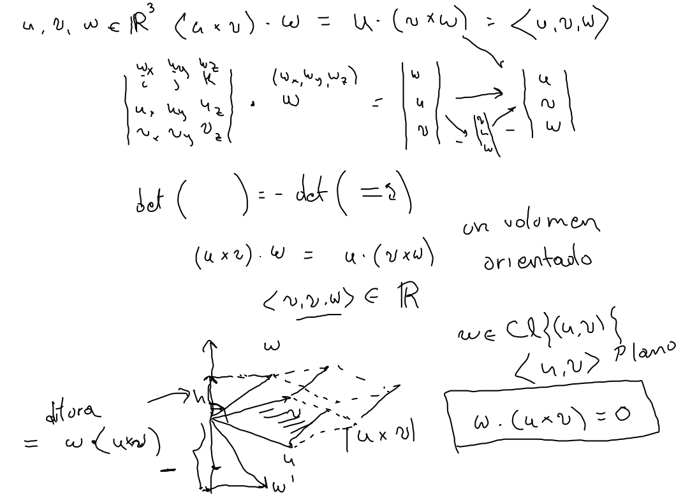
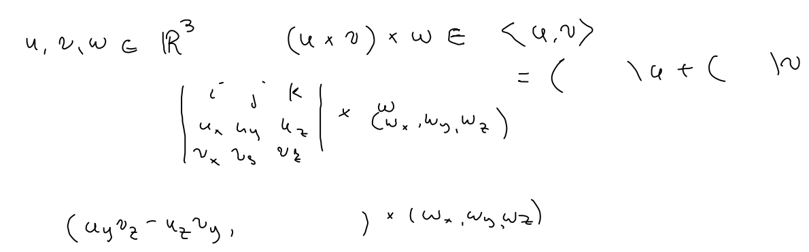
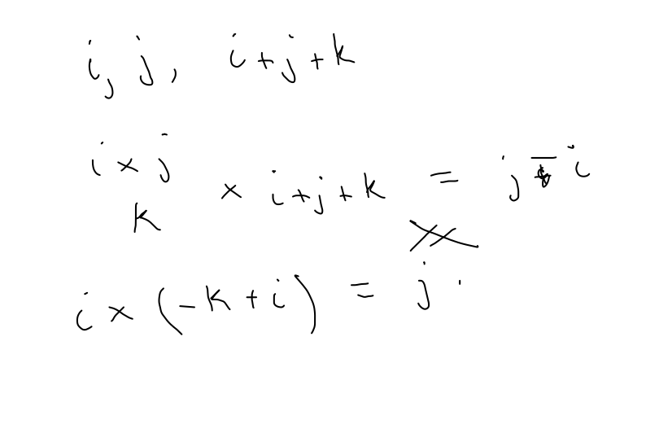
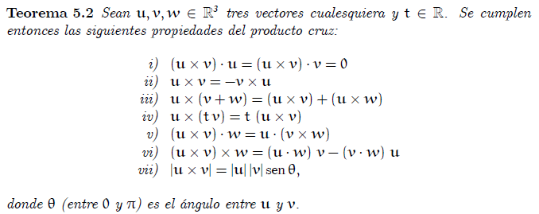
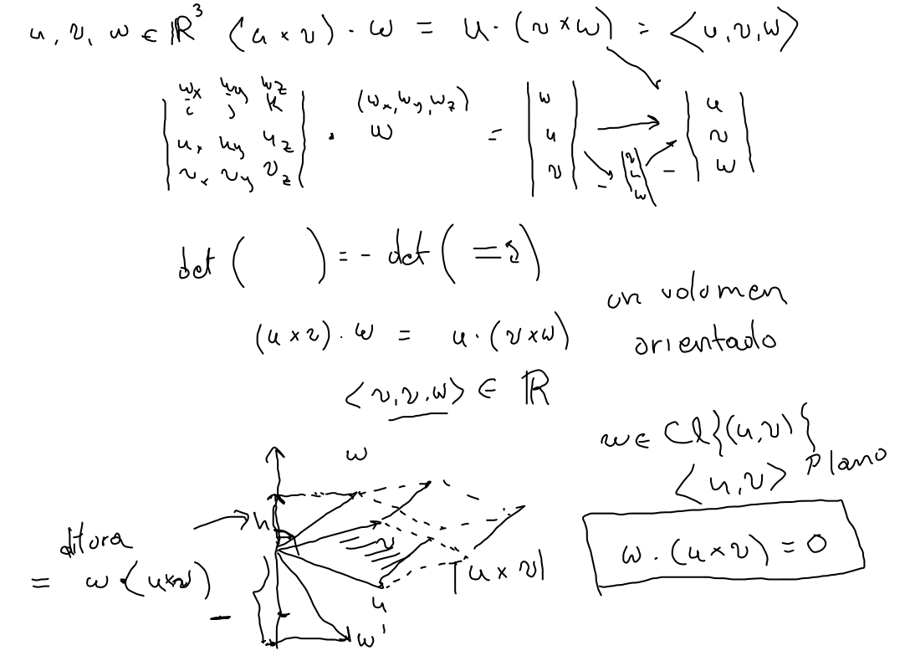
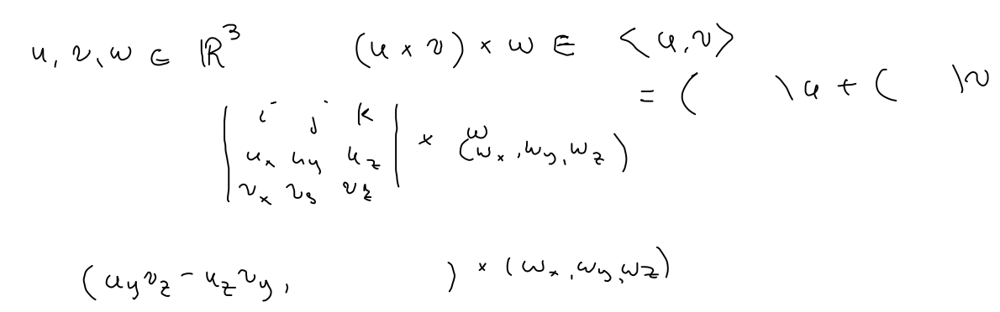
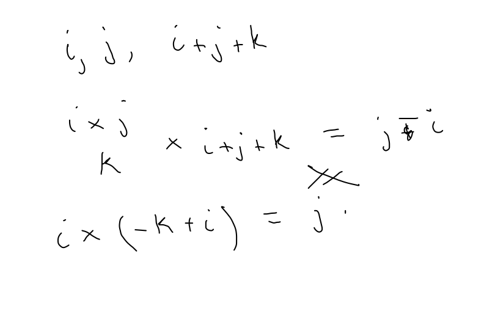
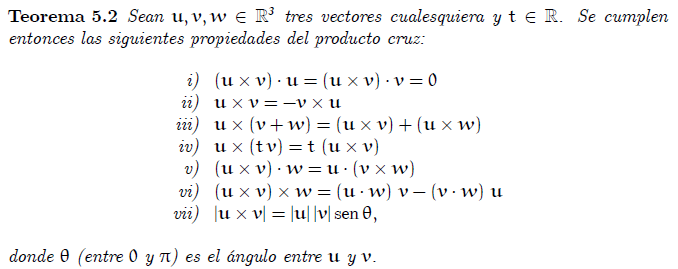

Producto cruz
Propiedades algebraicas
-
Triple producto 
 Es el volumen del paralelepipedo.
Es el volumen del paralelepipedo. -
Producto de tres vectores 
 No es asociativo. Ejemplo
No es asociativo. Ejemplo

Resumen del libro: 
Triple producto  Es el volumen del paralelepipedo.
Producto de tres vectores  No es asociativo. Ejemplo

Resumen del libro: 